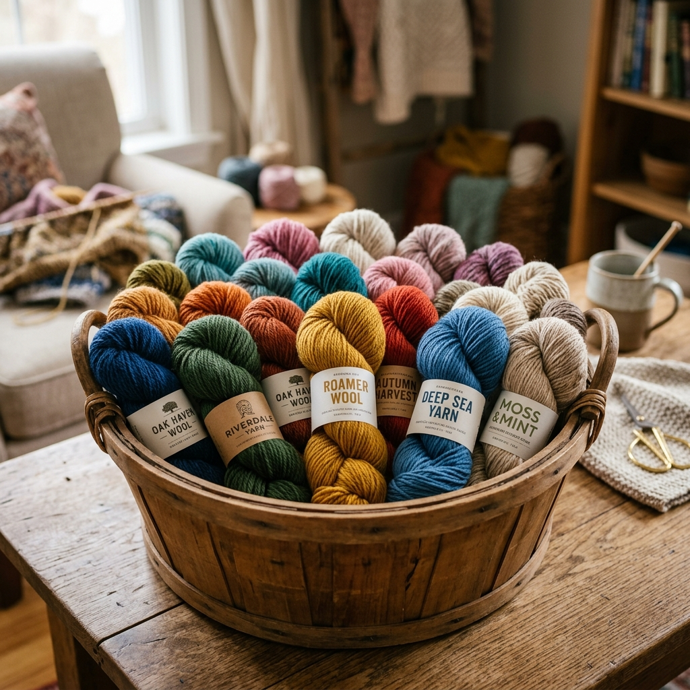

ไหมพรมคืออุปกรณ์ที่สำคัญที่สุดในการถักโครเชต์ การเลือกไหมให้เหมาะกับชิ้นงานจะกำหนดคุณภาพ ความทนทาน ความสวยงาม และความสบายในการสวมใส่ของชิ้นงานนั้นๆ มาเรียนรู้ทุกอย่างเกี่ยวกับไหมพรมกันครับ
สารบัญ
🧶 1. ประเภทไหมพรมและคุณสมบัติ
☁️ ไหมฝ้าย (Cotton)
ส่วนประกอบ: เส้นใยฝ้าย 100%
คุณสมบัติ: ระบายอากาศดี ซับน้ำ ไม่ระคายเคือง อยู่ทรง
เหมาะกับ: เสื้อผ้าฤดูร้อน, กระเป๋า, ดอยลี่, Amigurumi
ข้อเสีย: หนักกว่า ยืดน้อยกว่าอะคริลิก
🌈 ไหมอะคริลิก (Acrylic)
ส่วนประกอบ: เส้นใยสังเคราะห์ Polyacrylonitrile
คุณสมบัติ: ราคาถูก สีสดใส ซักง่าย ไม่หดตัว
เหมาะกับ: ผ้าห่ม, หมวก, ของตกแต่ง, ชิ้นงานฝึก
ข้อเสีย: ไม่ระบายอากาศ อาจร้อน
🐑 ไหมขนแกะ (Wool)
ส่วนประกอบ: ขนแกะ (Merino/Lambswool ราคาสูงกว่า)
คุณสมบัติ: เก็บความอบอุ่นดีเยี่ยม นุ่มฟู ยืดหยุ่น
เหมาะกับ: เสื้อกันหนาว, ผ้าพันคอ, หมวกฤดูหนาว
ข้อเสีย: บางคนแพ้ ราคาสูง ต้องระวังการซัก
🦙 ไหมอัลปาก้า (Alpaca)
ส่วนประกอบ: ขนอัลปาก้า บางครั้งผสมขนแกะ
คุณสมบัติ: นุ่มกว่าขนแกะ ไม่คัน น้ำหนักเบา
เหมาะกับ: เสื้อคาร์ดิแกน ผ้าพันคอ ผ้าห่มเด็ก
ข้อเสีย: ราคาสูงมาก อาจร่วงปุย
🌿 ไหมลินิน (Linen)
ส่วนประกอบ: เส้นใยจากต้นป่าน
คุณสมบัติ: แข็งแรงมาก ระบายอากาศดีที่สุด เย็นสบาย
เหมาะกับ: กระเป๋า ผ้าคลุม ชุดฤดูร้อน
ข้อเสีย: แข็ง ไม่ยืดหยุ่น ราคาสูง
🎋 ไหมไม้ไผ่ (Bamboo)
ส่วนประกอบ: เส้นใยจากไม้ไผ่
คุณสมบัติ: นุ่มลื่น ระบายอากาศ ป้องกันแบคทีเรีย
เหมาะกับ: เสื้อผ้า ผ้าเช็ดมือ ของสำหรับเด็ก
ข้อเสีย: ลื่นถักยาก ราคาปานกลาง-สูง
📏 2. ระดับความหนา (Yarn Weight)
ความหนาของไหมส่งผลโดยตรงต่อขนาดเข็มที่ใช้ และความหนาของชิ้นงานที่ได้
| ระดับ | ชื่อ (อังกฤษ) | เส้นผ่าศูนย์กลาง | เข็มโครเชต์ | เหมาะกับ |
|---|---|---|---|---|
| 0 | Lace | < 1 มม. | 1.5–2.25 มม. | ดอยลี่, ผ้าลูกไม้ |
| 1 | Super Fine / Fingering | ~1 มม. | 2.25–3.5 มม. | ถุงเท้า, Amigurumi จิ๋ว |
| 2 | Fine / Sport | ~1.5 มม. | 3.5–4.5 มม. | เสื้อผ้าบาง, หมวก |
| 3 | Light / DK | ~2 มม. | 4.5–5.5 มม. | เสื้อ, กระเป๋า, Amigurumi |
| 4 | Medium / Worsted ⭐ | ~3 มม. | 5.0–6.0 มม. | ✅ แนะนำสำหรับมือใหม่ |
| 5 | Bulky | ~4 มม. | 6.0–9.0 มม. | ผ้าห่ม, หมวกใหญ่ |
| 6 | Super Bulky | ~6 มม. | 9.0–15 มม. | ผ้าพันคอใหญ่, Arm Knitting |
| 7 | Jumbo | > 10 มม. | > 15 มม. | พรม, ของตกแต่งใหญ่ |
🏷️ 3. วิธีอ่านฉลากไหมพรมทุกสัญลักษณ์
ฉลากไหมพรมมีข้อมูลสำคัญครบถ้วน ถ้าอ่านเป็นจะซื้อถูก ถักถูก และดูแลถูกวิธี
| ข้อมูลบนฉลาก | ความหมาย | ตัวอย่าง |
|---|---|---|
| น้ำหนัก (Weight) | น้ำหนักของไหมในม้วน | 50g, 100g |
| ความยาว (Length) | ความยาวเส้นไหมทั้งม้วน | 200m, 400m |
| ส่วนประกอบ (Fiber) | วัสดุที่ใช้ทำเส้นไหม | 100% Cotton, 50% Wool/50% Acrylic |
| Lot Number | เลขล็อตการผลิต — ซื้อสีเดียวกันควรซื้อ Lot เดียวกัน | Lot: 2B456 |
| Dye Lot | เลขล็อตสีย้อม — ต่าง Lot อาจสีเพี้ยน | Dye Lot: 3781 |
| สัญลักษณ์ตุ๊กตา | Gauge แนะนำ (จำนวนห่วง × แถวต่อ 10 cm) | 20 st × 26 rows = 10 cm |
| สัญลักษณ์เข็ม | ขนาดเข็มโครเชต์แนะนำ | 4.0–5.0 มม. |
| สัญลักษณ์การซัก | วิธีซักและดูแลที่ปลอดภัย | 🌊 30°C, ✋ ซักมือ, ❌ ห้ามอบแห้ง |
ถ้าต้องซื้อไหมเพิ่มกลางคัน ต้องซื้อ Dye Lot เดียวกันเท่านั้น ถ้าต่าง Lot สีอาจเพี้ยนเล็กน้อยแต่จะเห็นชัดในชิ้นงาน โดยเฉพาะงานสีเดียว
⚖️ 4. เส้นใยธรรมชาติ vs สังเคราะห์
| คุณสมบัติ | ธรรมชาติ (Cotton/Wool) | สังเคราะห์ (Acrylic/Nylon) |
|---|---|---|
| ราคา | ปานกลาง-สูง | ถูกกว่า |
| ความนุ่ม | นุ่มสบาย (ขึ้นกับชนิด) | อาจแข็งหรือเป็นขุย |
| ความทนทาน | ทนดี แต่ต้องดูแล | ทนมาก ซักได้บ่อย |
| การซัก | บางชนิดต้องซักมือ | ส่วนใหญ่ใส่เครื่องได้ |
| สิ่งแวดล้อม | ย่อยสลายได้ | ย่อยสลายช้า |
| เหมาะกับผิวแพ้ง่าย | Cotton, Bamboo ✅ | ควรระวัง Acrylic บางชนิด |
🎯 5. วิธีเลือกไหมให้เหมาะกับชิ้นงาน
งาน Amigurumi / ตุ๊กตา
ใช้ ไหมฝ้าย 100% เส้นเบอร์ 2–3 (DK) เข็ม 2.5 มม. เนื้อผ้าจะแน่น ใยไม่โผล่ ทรงดี ไม่แนะนำ Acrylic เพราะห่วงใหญ่เกินไป
เสื้อผ้าฤดูร้อน
ใช้ ไหมฝ้ายหรือไหมไม้ไผ่ เนื้อบาง ระบายอากาศ น้ำหนักเบา เพิ่มความสบายในการสวมใส่
เสื้อกันหนาว / ผ้าห่ม
ใช้ ไหมขนแกะ Merino หรือ Acrylic Worsted เก็บความอบอุ่น สวมสบาย สำหรับงบประหยัดใช้ Acrylic ซื้อง่ายและซักได้บ่อย
กระเป๋า / Tote Bag
ใช้ เชือกร่ม (Macramé Cord) หรือ ไหมฝ้ายเส้นใหญ่ (Bulky Cotton) แข็งแรง ทนทาน คงทรง
มือใหม่ฝึกถัก
ใช้ Acrylic Worsted สีอ่อน ราคาถูก มองเห็นห่วงชัด ซักล้างได้ ถ้าถักพังก็แกะทำใหม่ไม่เสียดาย
🎨 6. การเลือกสีและการจับคู่สี
Color Wheel — วงล้อสี
สีตรงข้ามกันในวงล้อสี (Complementary) เช่น ฟ้า-ส้ม, ม่วง-เหลือง จะ "Pop" สวยงามมาก สีข้างเคียง (Analogous) เช่น ฟ้า-เขียว-เทอร์ควอยซ์ ให้ความรู้สึกนุ่มนวลสงบ
เทคนิค Color Blocking
แบ่งสีเป็นกลุ่มใหญ่ชัดเจน เช่น 60% สีหลัก + 30% สีรอง + 10% สีเน้น ให้ผลงานดูมีชีวิตชีวาและมีความลึก
ทดสอบสีก่อนซื้อ
นำม้วนไหมหลายสีมาวางข้างกันในร้าน ดูภายใต้แสงธรรมชาติ เพราะแสงร้านค้าอาจทำให้สีเพี้ยน ถ่ายรูปไว้ก็ดี
🔗 7. เทคนิคต่อไหมระหว่างม้วน
Russian Join — ต่อแบบรัสเซีย (แข็งแรงที่สุด)
ร้อยปลายไหมม้วนเก่าย้อนกลับเข้าไปในเส้นไหม 3–4 cm แล้วสอดปลายม้วนใหม่ผ่านวงที่สร้างขึ้น จากนั้นร้อยม้วนใหม่ย้อนกลับเข้าตัวเองเช่นกัน ดึงให้แน่น ไม่ต้องเย็บซ่อนปลาย
Magic Knot — ง่ายที่สุด
วางปลายไหมสองม้วนทับกัน → ผูกปมทับกัน → ดึงจากทั้งสองด้านให้แน่น → ตัดปลายเหลือ 1–2 cm เป็นวิธีที่ง่ายที่สุดแต่ต้องซ่อนปลายในภายหลัง
Split Splice — สำหรับไหมขนสัตว์
แยกเส้นไหมปลายม้วนเก่าและม้วนใหม่ออกครึ่งหนึ่ง ตัดทิ้งครึ่ง นำส่วนที่เหลือมาพันทบกัน เลียให้ชื้น ขยี้ให้ยึดติดกัน (Felting) เหมาะเฉพาะไหมขนสัตว์ 100%
🫧 8. การดูแลรักษาและซักผ้าถัก
ไหมฝ้าย (Cotton)
ซักเครื่องได้ในโปรแกรม Gentle/Delicate น้ำเย็น–อุ่น ไม่เกิน 40°C อบแห้งได้ในอุณหภูมิต่ำ หรือตากให้แห้งเอง ไม่หดตัวมาก
ไหมอะคริลิก (Acrylic)
ซักเครื่องได้ง่าย น้ำเย็นถึงอุ่น ห้ามอบแห้งด้วยความร้อนสูง (ไหมจะละลาย) ปั่นรอบเบา ตากในร่มหรืออากาศถ่ายเท
ไหมขนแกะ (Wool)
ห้ามขยี้หรือบิดเด็ดขาด จะทำให้หด (Felting) — ซักมือในน้ำเย็น ใช้ผลิตภัณฑ์สำหรับขนสัตว์โดยเฉพาะ บีบน้ำออกเบาๆ ห่อด้วยผ้าขนหนูซับน้ำ แล้วตากราบในแนวนอน
📦 9. การเก็บรักษาไหมพรม
เก็บในที่แห้ง ไม่โดนแสงแดดโดยตรง
แสงอาทิตย์จะทำให้สีซีด โดยเฉพาะสีเข้มและสีสด เก็บในกล่องหรือตะกร้าที่มีฝาปิด
ป้องกันแมลง (โดยเฉพาะไหมขนสัตว์)
ใส่ Cedar Ball (ลูกบอลไม้สน) หรือลาเวนเดอร์แห้งในกล่องเก็บ แมลงไม่ชอบกลิ่นเหล่านี้ ห้ามใช้ Mothball (ลูกเหม็น) เพราะมีสารพิษ
เก็บไหมที่ถักค้างในถุง Ziploc
ใส่ชิ้นงานที่ยังถักไม่เสร็จพร้อมเข็มและปลายด้ายในถุง Ziploc แยกแต่ละชิ้นงาน จะได้ไม่ยุ่งเหยิง
💰 10. ไหมพรมแนะนำในทุกงบประมาณ
| งบประมาณ | ยี่ห้อที่แนะนำ | ประเภท | ราคา/ม้วน |
|---|---|---|---|
| ประหยัด | DMC Natura, Phildar Phil Coton | Cotton | 50–80 บาท |
| ประหยัด | Patons, Red Heart Super Saver | Acrylic | 80–150 บาท |
| ปานกลาง | Lion Brand, Drops Safran | Cotton/Blend | 150–300 บาท |
| ปานกลาง | Paintbox Cotton DK, Scheepjes | Cotton | 200–350 บาท |
| พรีเมียม | Madelinetosh, Malabrigo | Wool/Alpaca | 500–1,200 บาท |
| พรีเมียม | Lana Grossa, Filatura di Crosa | Merino Wool | 600–1,500 บาท |
ไหมพรมหาซื้อได้ที่ร้านขายอุปกรณ์งานฝีมือเช่น Homepro, Lotus, หรือร้านในตลาดนัด ออนไลน์ใช้ Shopee/Lazada ค้นหา "ไหมพรม" หรือ "cotton yarn" ราคาถูกกว่าร้านค้าปกติ 20–40%